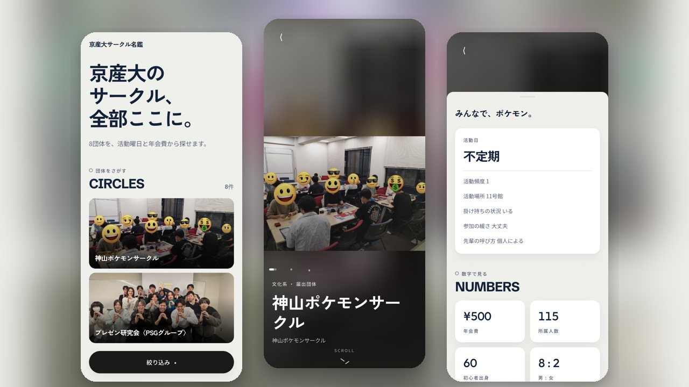
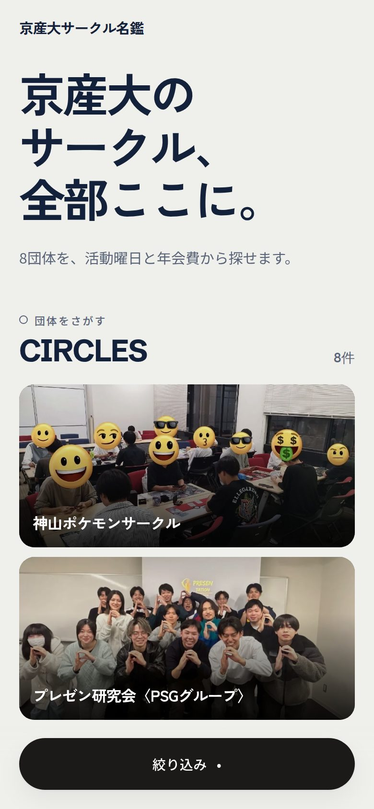
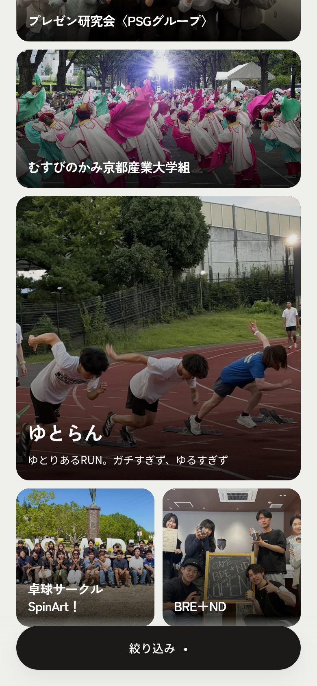
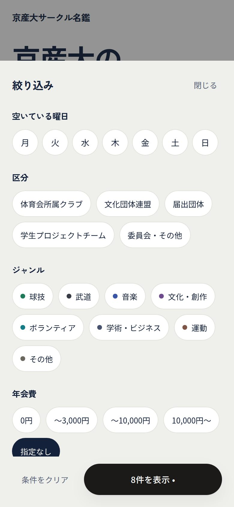
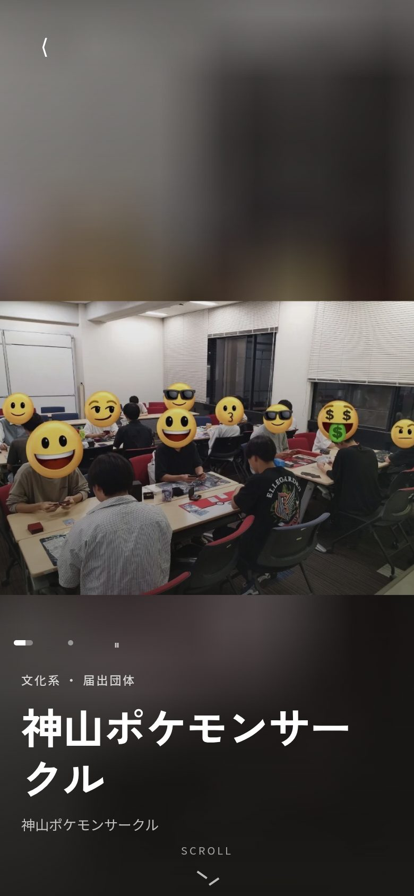
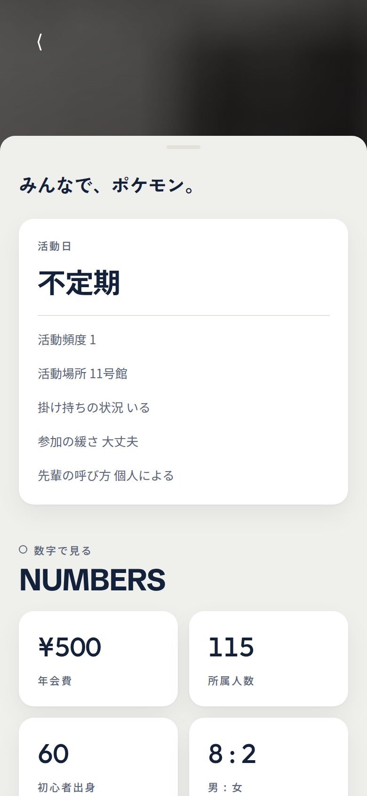

01 / Challenge · 解決したいこと
京都産業大学には約158の課外活動団体があるが、大学の公式サイトには団体名と区分しか載っていない。活動曜日、実際の年会費、人数、初心者の割合、男女比、いまから入れるかといった、入るかどうかを決めるのに必要な情報は、団体ごとのInstagramを1つずつ見るか、新歓で直接聞くしかなかった。
Work / 2026
京都産業大学の約158の課外活動団体を、活動日・年会費・人数・男女比など同じ項目で横断して比べられるサークル情報サイト。

京都産業大学には約158の課外活動団体があるが、大学の公式サイトには団体名と区分しか載っていない。活動曜日、実際の年会費、人数、初心者の割合、男女比、いまから入れるかといった、入るかどうかを決めるのに必要な情報は、団体ごとのInstagramを1つずつ見るか、新歓で直接聞くしかなかった。
運営が全団体に聞き取りをして、同じ15項目で埋めた名鑑サイト。一覧で曜日や年会費から絞り込み、団体ページで写真と数字を見比べられる。おすすめやランキング、口コミはあえて置かず、新入生が「失敗しない団体」を自分で選べることに絞っている。





Next.js（App Router）の静的生成で、サーバーもデータベースも持たない構成。掲載データの原本はGoogleスプレッドシートで、同期スクリプトが団体データ（JSON）に変換し、写真は縮小・WebP化してリポジトリに置く。シートが更新されるとGitHub ActionsがPRを作り、マージするとVercelが自動で公開する。
スマホ縦画面を基準に、1人で158団体を回せる運用を設計。面談中にその場で掲載イメージを見せて同意をもらう使い方を想定し、掲載前の確認用ページ（検索に載らない）も用意した。現在8団体を公開中。